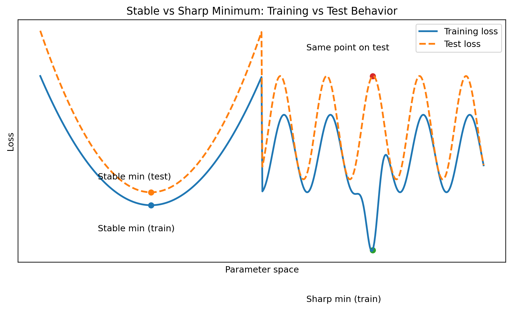

13 · Optimization vs Generalization
Lower training loss does not automatically mean better test performance
The key distinction
Optimization
Minimize the training objective
Generalization
Perform well on unseen data
These are connected, but they are not the same problem. A model that perfectly minimizes training loss may generalize poorly.
Flat vs sharp minima
Flat minima are wide basins in the loss landscape. Small perturbations to parameters cause little change in loss — the model is more robust.
Sharp minima are narrow. They fit training data well but tiny shifts in parameters can cause large increases in loss — and poor generalization.
SGD noise naturally biases training toward flatter, more generalizable solutions.

Optimization is about getting low loss. Machine learning is about getting low loss on new data.